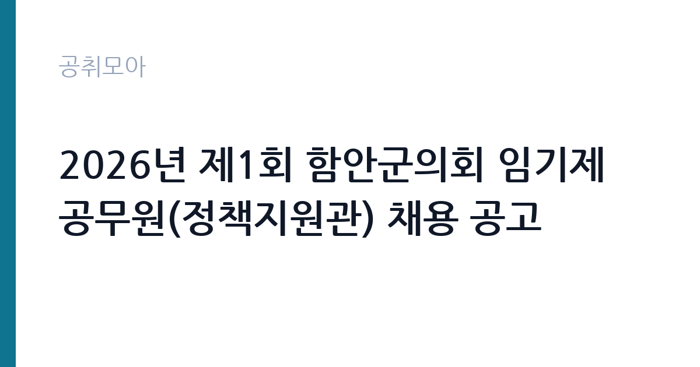

[지자체] 2026년 제1회 함안군의회 임기제공무원(정책지원관) 채용 공고
경상남도 함안군 의회사무과 · 경남 · 마감 2026-10-07 (D-13) · 출처 나라일터

한눈에 보는 모집 조건
| 기관 | 경상남도 함안군 의회사무과 |
|---|---|
| 공고명 | 2026년 제1회 함안군의회 임기제공무원(정책지원관) 채용 공고 |
| 고용형태 | 임기제 |
| 근무지 | 경남 |
| 게시일 | 2026-09-23 |
| 마감일 | 2026-10-07 (D-13) |
지원자격, 이렇게 읽으세요
- 지방행정주사보(일반임기제) 1명 지방한시임기제 8호 1명
- 접수 ~2026-10-07 마감
- 세부 조건은 원문 공고문 확인
두 자리의 응시 자격은 직급별로 다릅니다. 지방행정주사보 일반임기제는 6급 상당으로, 학사학위 취득 후 1년 이상 또는 3년 이상 관련 실무경력이나 8급 이상 공무원 2년 이상 경력 같은 요건을 요구하는 것이 일반적입니다. 한시임기제 8호는 8급 상당으로 상대적으로 문턱이 낮습니다. 정책 기획과 조사, 법제, 예산, 의원보좌 같은 관련 직무 경력이 인정됩니다. 정확한 자격과 경력 인정 범위는 원문 공고문의 응시자격표에서 확인하셔야 합니다. 두 자리 중 본인 경력에 맞는 한 곳을 골라 지원하시고, 중복 지원 가능 여부도 공고문에서 확인하시기 바랍니다.
이 공고의 포인트
이 공고의 포인트는 세 가지입니다. 첫째, 직급이 다른 두 자리를 동시에 뽑아 선택의 폭이 넓습니다. 경력이 길면 주사보에, 경력이 짧으면 한시임기제 8호에 도전할 수 있습니다. 둘째, 정책지원관 경력은 지방행정 이력으로 인정받습니다. 조례 제개정과 예결산 심의, 행정사무감사 지원 업무는 이후 다른 지자체 임기제나 공공기관 채용에서 실무 경력으로 살릴 수 있습니다. 셋째, 거주지 제한이 없는 경우가 많아 전국 어디서나 지원할 수 있습니다. 임기는 1년을 기본으로 실적에 따라 5년 범위에서 연장될 수 있으니 안정성도 노려볼 만합니다.
전형은 어떻게 진행되나
선발 방법은 1차 서류전형과 2차 면접시험입니다. 서류전형에서는 응시자격과 직무 관련 경력을 심사하고, 면접에서는 공무원으로서의 정신자세와 전문지식, 응용능력, 의사표현의 정확성과 논리성, 예의와 성실성, 창의력과 발전가능성을 평가합니다. 정책지원관 면접에서는 조례안 검토나 예산서 분석 같은 실무형 질문이 나올 수 있습니다. 접수 기간이 10월 1일부터 10월 7일로 짧고 방문 접수만 가능하므로, 가야읍 말산로 함안군의회 2층 의회사무과 의정담당을 직접 방문해야 합니다. 우편 접수 가능 여부는 공고문에서 확인하시기 바랍니다.
원문에서 확인한 전형 방식
함안군의회인사위원회 공고 제2026 – 1호 2026년도 제1회 함안군의회 지방임기제공무원 임용시험 시행계획을 다음과 같이 공고하오니 전문지식과 경력을 갖춘 유능하고 참신한 인재들의 많은 응시 바랍니다. 2026년 9월 23일 함안군의회인사위원회위원장 ○ 채용분야 및 인원 - 정책지원관 : 지방행정주사보(일반임기제) 1명, 지방한시임기제 8호(8급 상당) 1명 ○ 선발방법 : (1차) 서류전형, (2차) 면접시험 ○ 접수기간 : 2026. 10. 1.(목) ~ 10. 7.(수) ○ 접수장소 : (52043)경상남도 함안군 가야읍 말산로 5, 함안군의회 2층 의회사무과 의정담당 ○ 문의전화 : 055-580-2924 ※ 기타 자세한 사항은 붙임 공고문을 참조하시기 바랍니다.
이런 분께 추천해요
- 지방의회나 지자체에서 정책과 예산 실무 경력을 쌓고 싶은 분께 추천합니다.
- 관련 실무 경력을 갖추고 시험 부담 없이 공직에 진입하려는 분께 잘 맞습니다.
- 함안군과 경남 중부권에 거주하시거나 근무가 가능한 분께 좋은 기회입니다.
지원 전 체크리스트
- 주사보와 한시임기제 8호 중 본인 경력에 맞는 자리를 골랐습니다.
- 경력증명서와 학위증명서 등 자격 증빙 서류를 빠짐없이 준비했습니다.
- 방문 접수 장소와 시간을 확인하고 접수 기간 안에 방문했습니다.
- 조례와 예산 실무 지식을 정리해 면접을 대비했습니다.
모집 일정과 제출 타이밍
접수 기간은 2026년 10월 1일부터 10월 7일까지입니다. 단 7일간이며 방문 접수가 원칙이므로 마감일 방문이 몰릴 수 있어 초반에 접수하시기 바랍니다. 서류전형 합격자 발표와 면접시험 일정은 원문 공고문에 안내되어 있습니다. 임기제 채용은 접수부터 면접까지 한 달 안에 끝나는 경우가 많으니 서류 접수와 동시에 면접 준비를 시작하시기 바랍니다. 임용 시기와 임용 기간, 연장 조건도 공고문에 명시되어 있으니 지원 전에 확인하시기 바랍니다.
직무 이해하기: 지자체
정책지원관은 지방의원의 의정활동을 지원하는 전문 인력입니다. 의정자료의 수집과 조사, 연구 지원, 조례의 제정과 개정, 폐지 지원, 예산과 결산 심의 지원, 서류제출 요구서 작성, 행정사무 감사와 조사 지원, 공청회와 세미나, 토론회 개최 지원을 담당합니다. 2022년 지방자치법 개정으로 전반기 의원 정수의 2분의 1 범위에서 둘 수 있게 된 직위로, 지금은 전국 지방의회가 상시 채용하는 자리입니다. 의원을 가까이에서 보좌하므로 정치적 중립성과 문서 작성 능력, 조사 분석력이 중요합니다.
자기소개서 작성 팁
정책지원관 자기소개서는 조사와 분석, 입법 지원 역량을 보여주는 것이 핵심입니다. 조례안이나 정책 보고서를 다뤄본 경험을 구체적인 사례로 풀어주시기 바랍니다. 예산서나 결산서를 분석해본 경험, 공청회나 토론회를 지원해본 경험이 있다면 반드시 넣으시기 바랍니다. 함안군의 지역 현안 하나를 골라 본인이 정책지원관으로서 어떻게 지원할 것인지 제안하는 항목을 넣으면 차별화됩니다. 의원보좌 경력자는 중립성과 비밀유지 의식을 강조하시기 바랍니다.
면접 준비 포인트
면접에서는 지방자치와 의회 실무에 대한 이해를 중점적으로 봅니다. 지방자치법상 정책지원관의 역할과 함안군의회 구성을 기본으로 숙지해 가시기 바랍니다. 최근 함안군의 조례 제개정 이슈나 예산 쟁점을 하나 정도 파악하면 좋은 평가를 받습니다. 실무형 질문으로 모의 조례안의 문제점을 지적하거나 예산 사업의 타당성을 평가하라는 요구가 나올 수 있습니다. 의원 보좌라는 업무 특성상 정치적 중립과 청렴에 대한 질문에는 단호하고 명확하게 답하시기 바랍니다.
급여·근무조건 읽는 법
정책지원관의 연봉은 지방공무원보수규정에 따라 경력과 자격을 고려해 상한액과 하한액 범위 안에서 정해집니다. 참고할 만한 2026년 사례로, 용인시의회 지방행정주사보 일반임기제 정책지원관 모집의 연봉 범위는 상한액 7,078만2천원, 하한액 5,027만2천원이었습니다. 함안군은 기초의회라 같은 주사보 직급이라도 책정액이 다를 수 있으며, 함께 뽑는 한시임기제 8호는 8급 상당으로 별도 범위가 적용됩니다. 정확한 연봉액과 수당, 임용 기간은 원문 공고문에서 확인하시기 바랍니다. 임기제라 호봉 승급이 아닌 연봉 재계약 방식이므로 연장 시 보수 조정 조건도 함께 확인하시기 바랍니다. 경쟁률과 합격선은 공개되지 않았습니다.
자주 묻는 질문
- 두 자리 중 어디에 지원해야 합니까?
본인의 학위와 경력 연수에 맞는 쪽을 고르시기 바랍니다. 주사보는 6급 상당으로 요건이 높고, 한시임기제 8호는 8급 상당으로 문턱이 낮습니다. 중복 지원 가능 여부는 원문 공고문에서 확인하시기 바랍니다. - 거주지 제한이 있습니까?
정책지원관 채용은 거주지 제한 없이 전국 모집하는 경우가 많습니다. 정확한 응시 자격과 거주 요건은 원문 공고문에서 확인하시기 바랍니다. - 임기가 끝나면 어떻게 됩니까?
기본 1년 임기에 실적에 따라 5년 범위에서 연장될 수 있습니다. 연장이 보장되는 것은 아니므로 계약 조건을 정확히 확인하고 지원하시기 바랍니다.
함께 보면 좋은 공고
[지자체] 2026년도 제1회 해남군 시간선택제임기제공무원 경력경쟁채용시험 시행계획 재공고 — 마감 2026-10-08[지자체] 2026년 제4회 진주시 임기제공무원 임용시험 계획 재공고 — 마감 2026-10-08[지자체] 2026년 세종특별자치시 청원경찰 임용시험 계획 공고 정정 — 마감 2026-10-02출처: 나라일터 공개정보를 바탕으로 공취모아가 정리한 안내글입니다. 모집 조건·일정은 변경될 수 있으니 지원 전 반드시 원문 공고문을 확인하세요. 본 글은 정보 제공용이며 합격을 보장하지 않습니다.